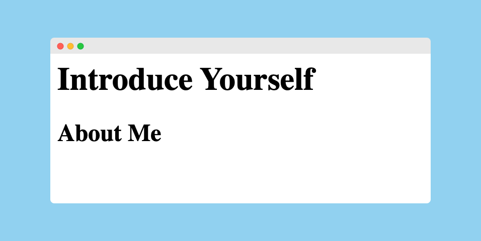

Check that you're logged in with your GitHub account
Check the name of your assignment is correct and then accept it. GitHub will make a copy of the template for you.
Click on the link to your repository
Clone your repository
Click on the green Code button and choose Open with GitHub Desktop
Choose a place (such as Documents) to download your code to
Open VS Code
Once it has cloned to your computer, click the Open in Visual Studio Code button (or press Command + Shift + A on MacOS or Ctrl + Shift + A on Windows)
Open the file called index.html
Now you're ready to get coding!
Copy and paste this code to your index.html file:
<h1>
Introduce Yourself
</h1>
<h2>
About Me
</h2>
Open the index.html file in your browser. You should see this page:

Customise
Change your two heading elements to personalise your web page.
Change the text inside your heading 1 element so that it has your name in it
Change the text inside your heading 2 element so that it has your year level in it
Copy and paste this code after your /h2 closing tag in your index.html file:
<p>
A paragraph about me.
</p>
Customise
Change your paragraph element to personalise your web page.
Change the text inside your paragraph element so that it has a little about you in it
We've completed some features already!
Copy and paste this code after your /p closing tag in your index.html file:
Change your list item elements to personalise your web page.
Change the text inside each list item element so that it has an interest of hobby of yours in it
Add two more list item elements with more interests, hobbies, sports, or anything!
Congratulations, the first iteration of your web page is complete.
You've taken the code provided and customised it to create your unique web page.
Along the way, you've learned about these parts of HTML.
Code
➕ h1 for main headings
➕ h2 for subheadings
➕ p for paragraphs
➕ ul for unordered lists (bullet points)
➕ li for list items inside an unordered list
Vocabulary
➕ tag - a single piece of HTML code inside pointy brackets
➕ element - a chunk of the webpage, such as a heading or paragraph
From here, you can choose to take your page further, by adding links to your social media, YouTube channel, blog, or whatever you like. You can also add images to make your web page more interesting to look at.
In your coding career you will often need to look up how to do things. In this section are a couple of websites to help you find information online about how to do what you want to do.
Most frequently, a good Google search will be the best option. Remember to include the keywords "HTML" and "links" so that Google will give you the best results (skip past the ads though!).